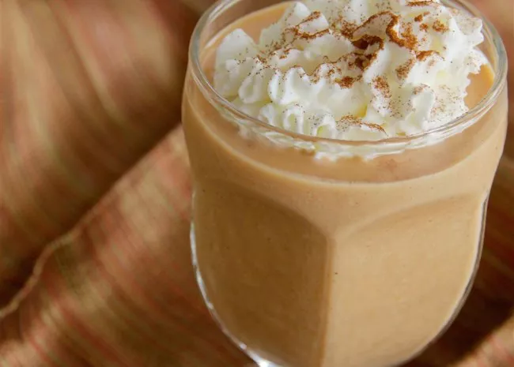

Pumpkin Pie Smoothie

A creamy and smooth treat, this recipe is just the thing to soothe a craving for your favorite seasonal dessert until the holiday season comes again.
Add a dash of cinnamon on top and a cinnamon stick too for an even more wonderful presentation!
- ½ cup canned pumpkin
- ½ cup vanilla ice cream
- ½ cup milk
- 2 tablespoons white sugar
- 1 ½ teaspoons vanilla extract
- ½ cup ice
- 2 tablespoons whipped cream
- Combine pumpkin, ice cream, milk, sugar, vanilla extract, cinnamon, cloves, and nutmeg in a blender;
blend until smooth. Add ice; blend until smooth.
- Place 1/3 of the graham cracker crumbs in the bottom of 2 small glasses. Fill glasses halfway with blended pumpkin mixture.
Top with another 1/3 of the graham cracker crumbs. Pour in remaining pumpkin mixture.
Top each glass with 1 tablespoon whipped cream and remaining graham cracker crumbs.